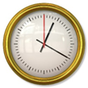

Time as a Structure
At the beginning of the semester (H01), you wrote a program to add and subtract time. This was harder than expected, because you didn't have a Time type; you did everything with integers. Let's rectify that now by creating a Time structure, with hours and minutes. Assume a 24-hour clock, so you don't need an indicator for AM/PM.
struct Time
{
int hours;
int minutes;
};Now, you can create a Time object that bundles that data:
int main()
{
Time lunch = = {11, 15};
cout << lunch.hours << ":" << lunch.minutes << endl;
return 0;
} This course content is offered under a
CC
Attribution Non-Commercial license. Content in this course
can be considered under this license unless otherwise noted.
This course content is offered under a
CC
Attribution Non-Commercial license. Content in this course
can be considered under this license unless otherwise noted.